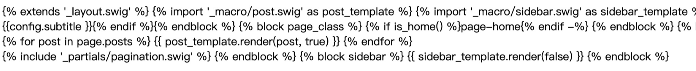

环境：macOS 11.2.3
Github配置
很久很久以前的某一天，我配置好了，忘了是怎么配置的了，有空补上这一段。。
安装Node.js
1 | $ brew install npm |
安装Hexo
1 | $ npm install -g hexo |
生成Blog代码
GitHub上先配置好github pages的仓库，然后拉到本地。
1 | $ git clone https://github.com/ScorpioQ/ScorpioQ.github.io.git |
就可以访问 http://localhost:4000 查看效果。
写文章
1 | $ hexo new '新文章' |
就会在 git_root/blog/source/_posts/ 下生成一个新文件“新文章.md”。
再次 hexo g + hexo s 之后就可以在 http://localhost:4000 看到效果。
更换主题
1 | // 在blog目录下拉取 |
打开blog配置文件_config.yml，找到theme选项。
1 | ## Themes: https://hexo.io/themes/ |
再次 hexo g + hexo s 之后就可以在 http://localhost:4000 看到效果。如果遇到这种错误：

需要额外安装一个插件：
1 | $ npm i hexo-renderer-swig |
部署到Github Pages
打开blog配置文件_config.yml，找到deploy选项。
1 | # Deployment |
本地修改了Blog内容之后，一行命令即可更新到线上。$ hexo g -d
添加评论功能
打开主题配置文件_config.yml，找到valine选项。
1 | # Valine. |
在这个地方 https://leancloud.cn 注册账号，然后创建一个应用，在“设置 > 应用Keys”里可以找到appid和appkey。Hexo还支持多种其他评论系统，有空再探索探索～
添加打分功能
打开主题配置文件_config.yml，找到rating选项。
1 | # Star rating support to each article. |
在这个地方 https://widgetpack.com 注册账号，之后在页面上方就可以看到ID，“侧边栏 > Rating”可以查看评分相关记录。
添加字数统计和阅读时长
$ npm i --save hexo-wordcount
打开主题配置文件_config.yml，找到post_wordcount选项。
1 | # Post wordcount display settings |
配置404页面
在theme/next/source下创建404.html，在本地没法测试这个页面，更新到GitHub之后，输入一个不存在的path就可以测试了，https://scorpioq.site/test_404
1 | --- |
README.md，CNAME文件被覆盖问题
hexo默认部署之后在根目录是没有这俩文件的，如果手动加上，再次hexo deploy之后，会发现文件又没了
解决方法：将这俩文件放在hexo项目的source/下面，hexo g之后，生成文件的根目录就有了
Next主题
https://theme-next.iissnan.com/
这个主题可配置的元素特别多，可以慢慢研究研究